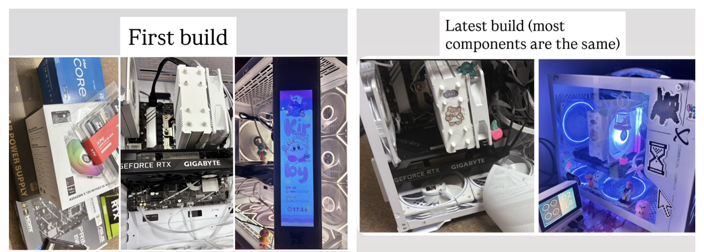
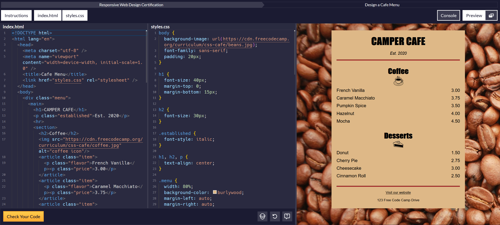
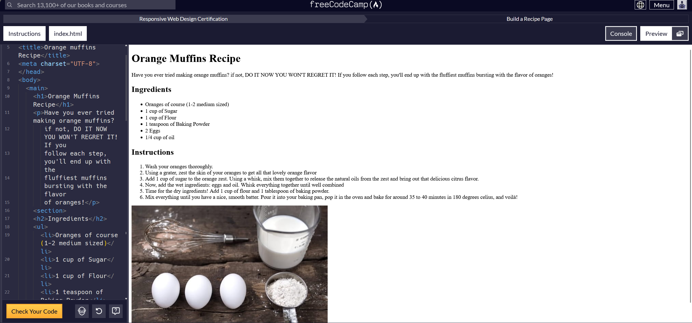
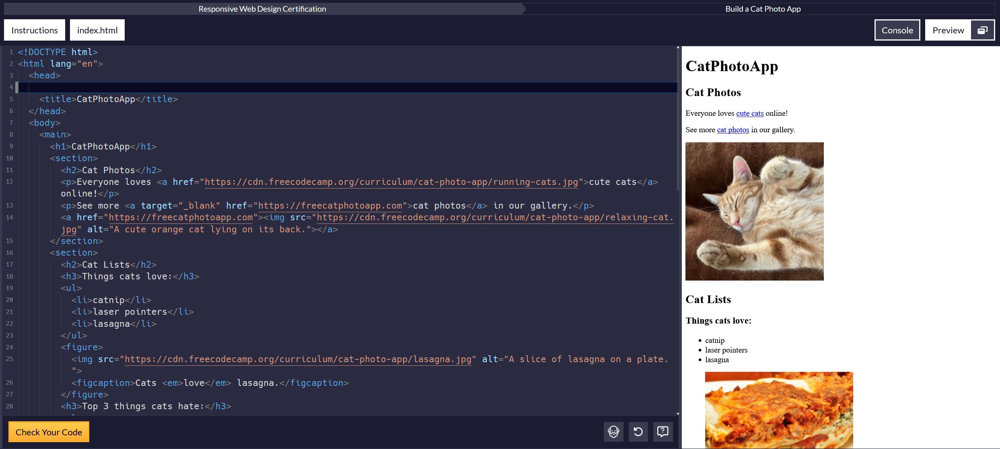
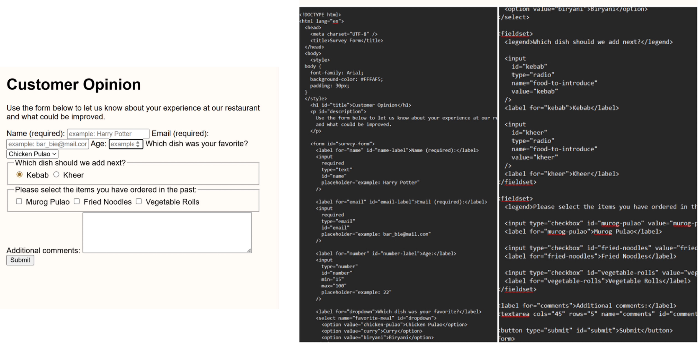

I'm Jubaida (often called Jubie), an aspiring tech enthusiast and learner. On this page, I’d like to share a brief overview of my journey into technology so far.
As a child, I watched my father use Microsoft software for work and began observing and experimenting alongside him. By seventh grade, my computer teacher asked me to assist in the lab and to guide peers through activities, running mini assessments, and submitting performance reports. That responsibility was a turning point as teaching others confirmed my interest and drove me to keep learning.
I developed an interest in both the hardware and software aspects of technology, especially computer systems. This led me to gather and assemble parts to build my own PC, as shown below:

Below is a short clip of me installing the CPU cooler into the motherboard:
Specifications:
And here are some of the beginner projects that I've worked on so far, mainly using freecodecamp.org.
Below are some screenshots taken after completion of the above mentioned projects I've worked on:



Here is my work for the Customer Survey Form:

CLICK HERE to view the Feedback Form
CLICK HERE to view the Feedback Form code on GITHUB
I built a playable casual Roblox game while teaching myself the basics of Lua scripting. The game is still in an early stage, and I look forward to deepening my Lua skills and publishing the games I build.
Here's a clip of me testing out the Roblox game:
In short, I'm learning to code so I can create things of real value through technology work that others can use, enjoy or benefit from. Building brings me genuine joy and gives me a sense of purpose. I'm now seeking a formal education in IT to deepen that knowledge and take my skills further.
Thank you for reading!